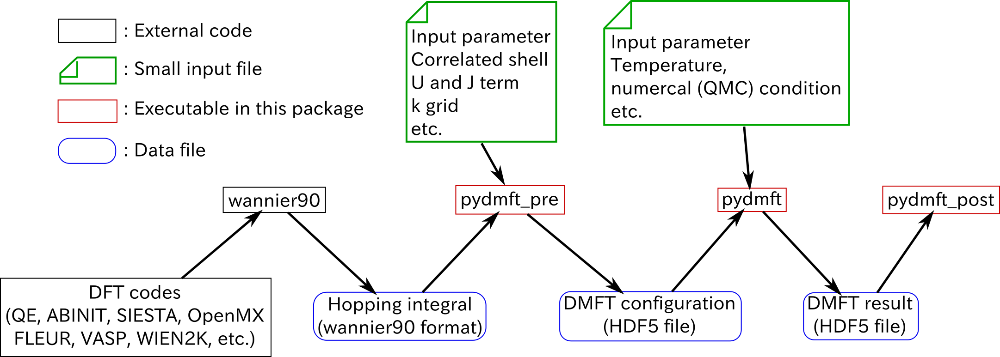

Structure of pyDMFT¶
{kind=link}
The central part of DFTTools, which is performing the steps for the DMFT self-consistency cycle, is written following the same philosophy as the TRIQS toolbox. At the user level, easy-to-use python modules are provided that allow to write simple and short scripts performing the actual calculation. The usage of those modules is presented in the user guide of this Documentation. Before considering the user guide, we suggest to read the following introduction on the general structure of the DFTTools package.
The interface layer¶
Since the input for this DMFT part has to be provided by DMFT calculations, there needs to be another layer that connects the python-based modules with the DFT output. Naturally, this layer depends on the DFT package at hand. At the moment, there is an interface to the Wien2k band structure package, and a very light interface that can be used in a more general setup. Note that this light interface layer does not allow full charge self-consistent calculations.
Standard interface¶
In addition to the specialized Wien2k interface, DFTTools
provides also a very light-weight general interface. It basically
consists of a very simple HkConverter. As input it requires a
Hamiltonian matrix \(H_{mn}(\mathbf{k})\) written already in
localized-orbital indices \(m,n\), on a \(\mathbf{k}\)-point
grid covering the Brillouin zone, and just a few other informations
like total number of electrons, how many correlated atoms in the unit
cell, and so on. It converts this Hamiltonian into a hdf5 format and
sets some variables to standard values, such that it can be used with
the python modules performing the DMFT calculation. How the
Hamiltonian matrix \(H_{mn}(\mathbf{k})\) is actually calculated,
is not part of this interface.
Wannier90 interface¶
In addition to the specialized Wien2k interface, DFTTools
provides also a very light-weight general interface. It basically
consists of a very simple HkConverter. As input it requires a
Hamiltonian matrix \(H_{mn}(\mathbf{k})\) written already in
localized-orbital indices \(m,n\), on a \(\mathbf{k}\)-point
grid covering the Brillouin zone, and just a few other informations
like total number of electrons, how many correlated atoms in the unit
cell, and so on. It converts this Hamiltonian into a hdf5 format and
sets some variables to standard values, such that it can be used with
the python modules performing the DMFT calculation. How the
Hamiltonian matrix \(H_{mn}(\mathbf{k})\) is actually calculated,
is not part of this interface.
Post-processing¶
The main result of DMFT calculation is the interacting Greens function
and the Self energy. However, one is normally interested in
quantities like band structure, density of states, or transport
properties. In order to calculate these things, DFTTools
provides the post-processing modules SumkDFTTools. It
contains routines to calculate
- (projected) density of states
- partial charges
- correlated band structures (spaghettis)
- transport properties such as optical conductivity, resistivity, or thermopower.